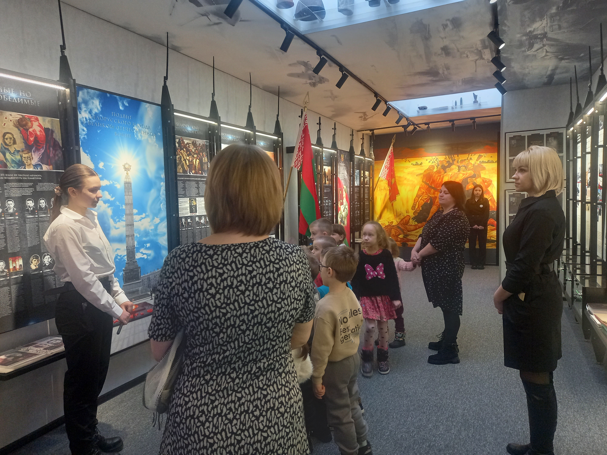
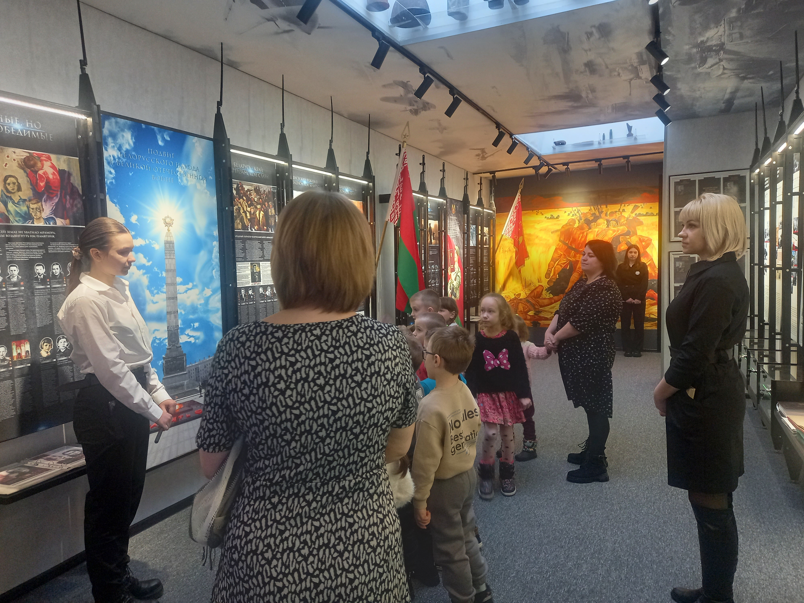

Музей школы был основан в 1987 году. В 2022 году он был полностью реконструирован и 9 мая 2023 года состоялось его торжественное открытие, на котором присутствовали гости района самого высокого уровня.
Фонд музея насчитывает более 200 экспонатов. Основу составляют письменные и вещественные источники: фотографии бойцов 172-й стрелковой дивизии и ветеранов Великой Отечественной войны, предметы военного времени, копии боевых наград С. Л. Краснопёрова, альбомы, а также материалы, собранные педагогами и учащимися по истории нашего района и области в годы Великой Отечественной войны.
Музей имеет постоянную экспозицию, состоящую из нескольких основных разделов:
Стрелковая дивизия сформирована в 1939 году на базе 84-й стрелковой дивизии и дислоцировалась недалеко от Тулы в городе Сталиногорске. В Сталиногорске находились штаб дивизии (управление), 747-й стрелковый полк, 341-й отдельный зенитный дивизион, 222-й батальон связи и 340-й лёгкий артиллерийский полк. В Богородицке стоял 493-й гаубичный артиллерийский полк, в Ефремове — 388-й стрелковый полк, а в Белёве — 514-й стрелковый полк.
Дивизия укомплектована из жителей Тульской области и частично Московской, кроме того в дивизию прибыла группа военнослужащих из Белорусской ССР и Горьковской области. Командиром назначен полковник Я. Г. Крейзер. Тульский областной комитет партии помог в устройстве частей дивизии.
Вскоре 172-я дивизия была направлена на финский фронт, где получила первое боевое крещение. После финской войны дивизия вернулась в прежние пункты дислокации. 14 марта 1941 года командиром дивизии назначен генерал-майор М. Т. Романов.
Незадолго до начала Великой Отечественной войны дивизия выехала в Тесницкие лагеря под Тулой для летней учёбы. С началом войны в дивизию также были направлены шахтёры и химики Сталиногорска, Богородицка и других районов Тульской области, не имевшие брони.
Приказом командующего Западным фронтом от 7 июля 172-я стрелковая дивизия была включена в 61-й стрелковый корпус генерала Ф. А. Бакунина в составе 13-й армии. Направлена в Могилёв.
26 июня первый эшелон дивизии отбыл на запад. В период с 28 июня по 3 июля части дивизии сосредоточивались в районе Могилёва и организовывали оборонительные сооружения: полевые сооружения, окопы, ходы сообщения и т. д. В земляных работах также принимали жители Могилёва.
8 июля передовые части немецкого 46-го моторизованного корпуса подошли к Могилёву и после бомбардировки люфтваффе атаковали передний край дивизии на стыке 514-го и 388-го стрелковых полков. Вклинившись в оборону дивизии, немецкие части потеряли не менее 40 танков, в связи с чем они прекратили фронтальные удары и вышли севернее Шклова и у Быхова с целью танкового прорыва по сходящимся направлениям для обхода и окружения узла сопротивления у Могилёва.
С южного участка фронта в район Могилёва выдвинулась 3-я танковая дивизия. Успешно форсировав Днепр на участках 53-й и 187-й стрелковых дивизий, передовые части 10-й моторизованной дивизии попытались выйти к северу от Луполово, чтобы выйти в тыл защитникам Могилёва. Но эта попытка не удалась из-за активной обороны частей 172-й стрелковой дивизии. С наступлением темноты отряд 747-го стрелкового полка (начальник штаба полка майор Г. И. Златоустовский) внезапно атаковал на Сидоровичи и Слободку, отбросив немецкие части. По советским данным, потери противника составили 30 автомашин, орудия и автомобили.
Отряд майора Г. И. Златоустовского закрепился и несколько дней сдерживал попытки противника прорваться в район Луполово. В состав отряда входили курсанты полковой школы, которые отражали танковые атаки бутылками с горючей смесью. Огневую поддержку им оказывала полковая артиллерийская батарея капитана И. О. Трофимова. Только к 25 июля противник потеснил части 172-й стрелковой дивизии к окраинам Могилёва, и овладев Луполово, отрезал дивизию от основных сил 61-го стрелкового корпуса, которые к тому времени находились в окружении северо-восточнее Могилёва. 26 июля на восточный берег Днепра прорвались немногочисленные подразделения 388-го стрелкового полка, а в обратном направлении, в район боевых действий основных сил корпуса вышли несколько подразделений 514-го и 747-го стрелковых и небольшие группы артиллерийских полков.
В течение трёх недель 172-я стрелковая дивизия и другие соединения 13-й армии обороняли Могилёв, сковав не менее 4-х пехотных дивизий противника. В этих боях особенно отличился 388-й стрелковый полк под командованием полковника С. Ф. Кутепова. 20 июля 1941 года в газете «Известия» был напечатан очерк военного корреспондента К. Симонова «Горячий день» о бое на Буйничском поле, в ходе которого 388-й стрелковый полк С. Ф. Кутепова за один день подбил 39 танков противника.
В ночь на 27 июля остатки дивизии прорвались из окружения и, следуя с боями по территории, занятой противником, вышли в район Смоленска. При выходе из окружения был тяжело ранен руководитель обороны города Могилева генерал М. Т. Романов. Его укрыл и некоторое время лечил колхозник деревни Барсуки М. Ф. Асмоловский. Однако вскоре генерал был схвачен и доставлен в Луполовский лагерь смерти. После неудачной попытки побега, М. Т. Романов был отправлен в концлагерь Хаммельбург. Погиб в концлагере Хаммельбург 3 декабря 1941.
В боях в районе Могилёва погибли командиры артиллерийских полков 172-й дивизии полковники И. С. Мазалов и И. Ф. Живолуп.
Дивизия расформирована 19 сентября 1941 года.


В стенах школьного музея проводятся музейные уроки, уроки мужества, экспонаты музея часто используются на классных и информационных часах, открытых мероприятиях. Здесь отмечаются знаменательные даты и праздники. Так, традиционно в преддверии 9 мая музей является местом встречи участников Великой Отечественной войны с учащимися и коллективом школы, проводятся открытые мероприятия военной направленности и уроки истории в музее.


За годы функционирования музей посетили более тысячи человек. Проходили встречи с ветеранами и очевидцами событий Великой Отечественной войны, узниками фашистских концентрационных лагерей. Проведено множество экскурсий как для учащихся своей школы, так и детских садов и учреждений образования города и района, почетных гостей.


В музее функционирует Совет музея, в котором состоят активные учащиеся из разных классов. Совет музея принимает участие в разработке и проведении экскурсий и встреч.
 

При Совете музея уже много лет работает объединение по интересам “Поиск”, в которое входят учащиеся разного возраста. Учащиеся ведут исследовательскую деятельность по истории Великой Отечественной войны нашего района и города, участвуют в научно - практических конференциях. Примером такого участия стала научная работа, посвящённая деятельности Паричского партизанской отряда имени С. Кирова, которая на областном этапе заняла 3 место. Также учащиеся объединения “Поиск” участвовали в экспедиции по поиску пропавшего самолёта и останков С. Л. Краснопёрова. Найденные обломки самолёта были переданы на Родину С. Л. Краснопёрова. Останки самого Героя Советского союза найти не удалось.

В 2022/2023 учебном году средняя школа №10 г. Светлогорска начала сотрудничество с Кадетской школой имени Героя Советского союза Е. И. Францева из г. Чернушка Пермского края Российской Федерации. Благодаря этому взаимодействию наше учреждение получило почетное звание называться школой имени С.Л.Краснопёрова, а экспозиция, посвященная этому Герою Советского союза, заняла центральное место в школьном музее. 9 мая 2024 года музей принимал у себя гостей из г. Чернушка. А весной 2025 года учащиеся Совета музея посетили с ответным визитом г. Чернушка и приняли участие в мероприятиях, посвященных 80-летию Победы в Великой Отечественной войне.